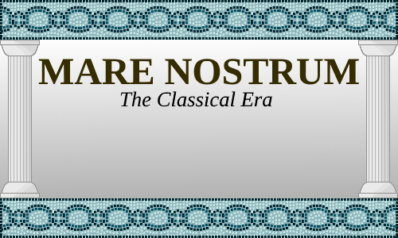

MARE NOSTRUM

Mare Nostrum is a lightweight grand strategy game set in the Classical Era. Your empire will rise, but it will also fall! Don't worry, though, you'll be able to continue your game by choosing a successor state to play as after your previous empire collapses.
Important features
Internal Politics: There are many characters, each with their own traits and ambitions. Keep them happy and they’ll serve you well, but ignore them and they might just start a civil war…
Deep Battle System: Turn-based battle system where you choose your general, deployment, tactics, and more!
Province Management: Build buildings, keep your citizens happy, issue edicts, colonize and more!
Technology: Research military, administrative and cultural technologies to keep your country stable and get an advantage over your rivals!
Other Mechanics: Of course there is diplomacy and the other standard GSG mechanics! While still important, these mechanics play a minor role compared to internal country management.